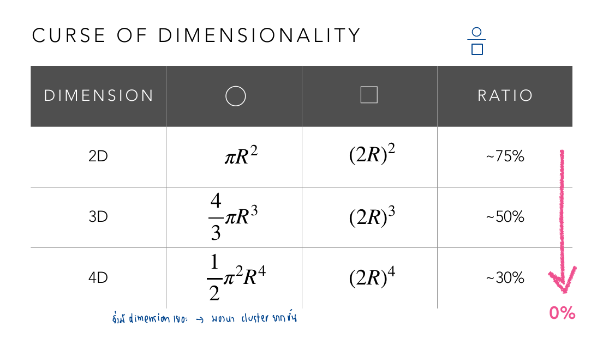
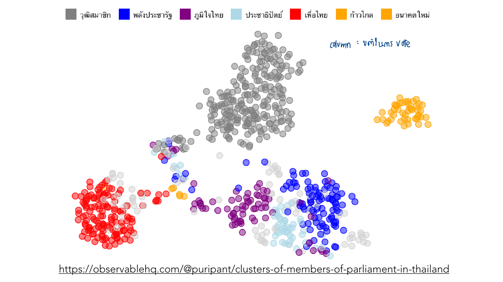
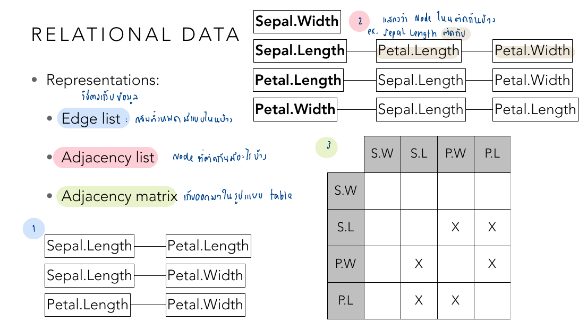
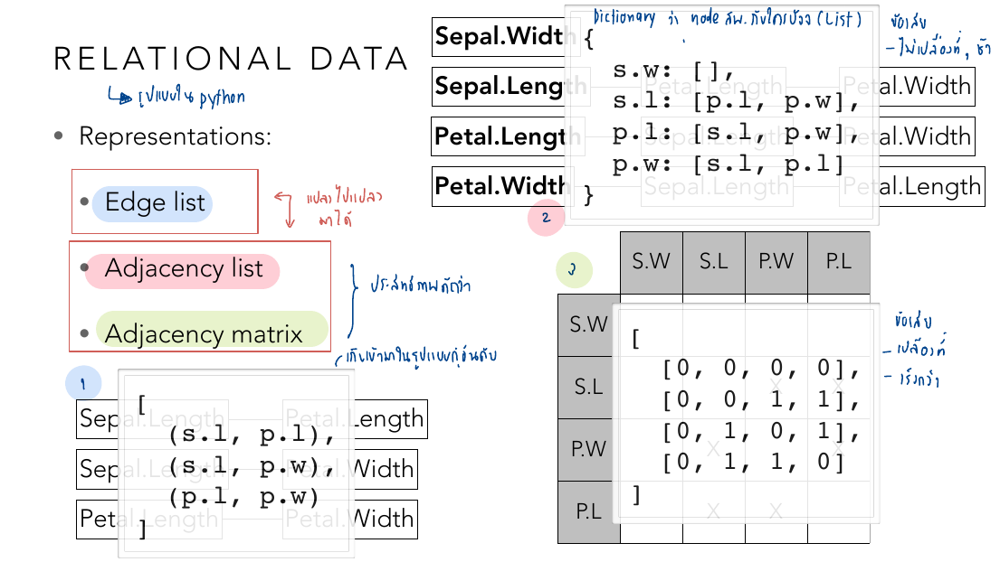
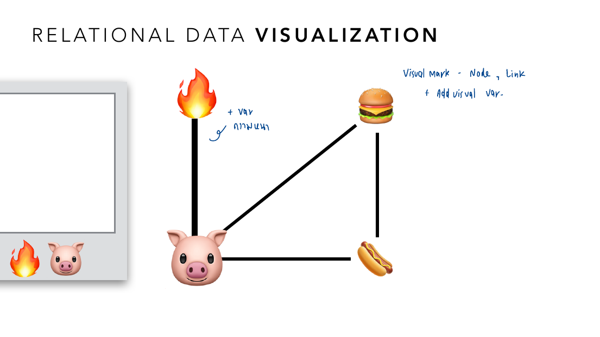
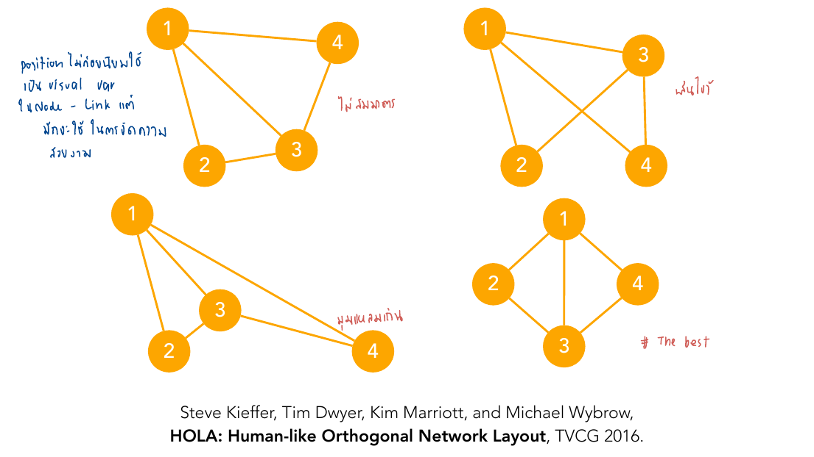
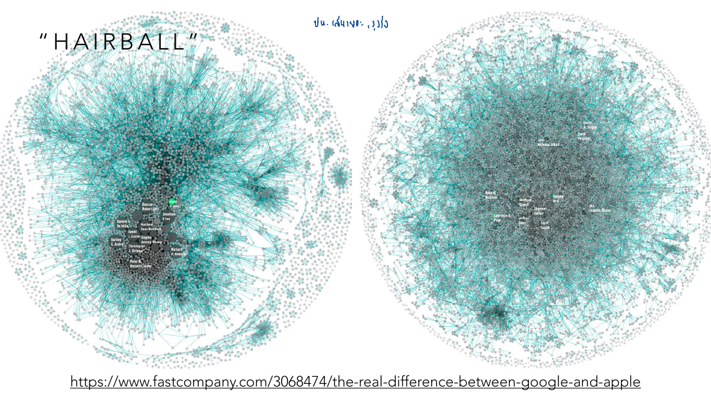
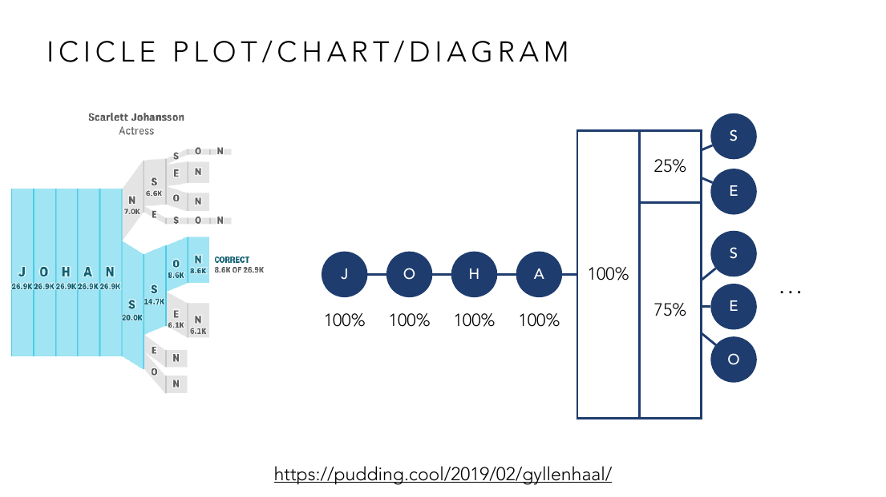
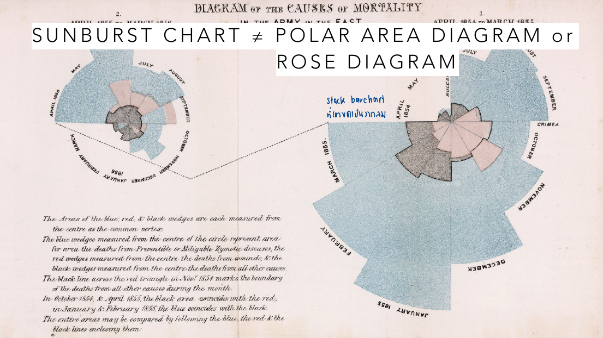
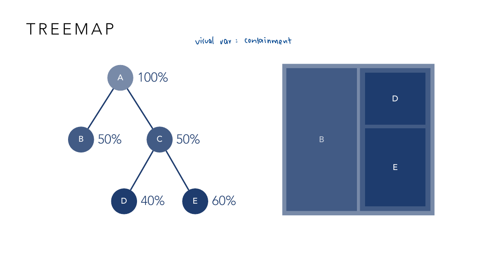

vis-7-relational-hierarchical.pdf
บทนี้ขึ้นสัปดาห์ที่ 9 — ก้าวข้าม "ตัวแปรกี่ตัว" (univariate/bivariate/multivariate) ไปสู่ "ความสัมพันธ์ระหว่างตัวแปร/ตัวอย่าง" โดยตรง อาจารย์ใช้ตัวอย่างจริงเยอะมาก ทั้งงานวิจัยของตัวเอง (สไลด์นี้มีถึง 2 ชิ้น) และเดโมที่ทำเอง — บทเรียนนี้จะเดินตามตัวอย่างเหล่านั้นเป็นหลัก.
อาจารย์เปิดด้วยตารางคะแนนนักเรียน A-D ใน 3 วิชา (English/Math/Science) แล้วค่อย ๆ เติมคอลัมน์ใหม่ทีละคอลัมน์ (Thai, Social...) — แต่ละครั้งที่เพิ่มมิติ การจะ "มองเห็น" ว่านักเรียนกลุ่มไหนคล้ายกันด้วยตาเปล่ายากขึ้นเรื่อย ๆ จนเกิน 3 มิติก็พล็อตตรง ๆ ไม่ได้แล้ว. Curse of Dimensionality อธิบายเชิงคณิตศาสตร์ว่าทำไมถึงยากขึ้น:

ลองตามตัวเลขในตาราง: อัตราส่วนปริมาตร "วงกลม/ทรงกลมในกรอบสี่เหลี่ยม" เทียบกับกรอบสี่เหลี่ยมนั้นเอง อยู่ที่ ~75% ตอน 2 มิติ ลดเหลือ ~50% ตอน 3 มิติ และ ~30% ตอน 4 มิติ — พอลากแนวโน้มนี้ต่อไปเรื่อย ๆ (โน้ตลายมือกำกับว่า "ถ้า dimension เยอะ → หลอน cluster ทุกที่") อัตราส่วนจะเข้าใกล้ 0% เมื่อมิติสูงมาก หมายความว่าจุดข้อมูลเกือบทั้งหมดไปกระจุกอยู่ที่ "มุม" ของพื้นที่ ไม่ใช่ตรงกลาง — ระยะห่างระหว่างจุดข้อมูลจะเริ่มไม่มีความหมาย (ทุกจุดห่างจากกันพอ ๆ กันหมด) ทำให้เทคนิค clustering แบบวัดระยะทางตรง ๆ ใช้ไม่ได้ผลอีกต่อไป นี่คือเหตุผลที่ต้องมี "embedding" มาช่วยบีบอัดข้อมูลหลายมิติกลับเป็น 2D ก่อนจะมองหา pattern.
เทคนิคอย่าง MDS, PCA, t-SNE, UMAP ใช้ "บีบ" ข้อมูลหลายมิติให้เหลือ 2 มิติสำหรับพล็อต โดยพยายามรักษาว่าจุดที่ใกล้กันในพื้นที่จริงยังใกล้กันบนภาพ 2D ตัวอย่างจริงจากงานวิจัยของอาจารย์ผู้สอนเอง:

ข้อมูลตั้งต้นคือ ส.ส. แต่ละคนโหวตอย่างไรในแต่ละมติ (แต่ละมติ = 1 มิติ อาจมีเป็นร้อยมิติถ้ามีหลายร้อยมติ) — เยอะเกินกว่าจะพล็อตตรง ๆ ได้ อาจารย์ใช้ embedding บีบให้เหลือ 2 มิติ แล้วให้สีแทนพรรค ผลลัพธ์คือกลุ่มก้อนสีแยกกันชัดเจนตามพรรค (สีแดง=เพื่อไทย, สีน้ำเงิน=พลังประชารัฐ, สีเทา=วุฒิสมาชิก ฯลฯ) — แปลว่า ส.ส. พรรคเดียวกันมักโหวตไปในทิศทางเดียวกัน (จุดอยู่ใกล้กันในพื้นที่หลายมิติเดิม) กลุ่มสีเทา (วุฒิสมาชิก) แยกตัวออกไปไกลสุดในมุมขวาบน สื่อว่าโหวตต่างจากทุกพรรคเลย — นี่คือตัวอย่างที่แสดงให้เห็นว่า embedding ไม่ได้แค่ "ลดมิติ" แต่ช่วยตอบคำถามวิจัยได้จริง (ใครโหวตคล้ายใคร) โดยไม่ต้องดูมติทีละมติ.
Relational data คือข้อมูลที่ "ความสัมพันธ์ระหว่างตัวแปร" สำคัญพอ ๆ กับตัวแปรเอง เช่น ตัวแปรไหนสัมพันธ์กับตัวแปรไหนในชุดข้อมูล iris ตัวอย่างจริงจากสไลด์:

ในชุดข้อมูล iris พบว่า Sepal.Length, Petal.Length, Petal.Width สัมพันธ์กันเองทั้งหมด (Edge List มี 3 คู่: SL-PL, SL-PW, PL-PW) แต่ Sepal.Width ไม่ปรากฏในคู่ไหนเลย — สังเกตว่า Sepal.Width ถูกวาดแยกไว้มุมบนสุดของภาพ ไม่มีเส้นโยงไปหาตัวแปรอื่น นี่คือใจความสำคัญของ "relational data": ข้อมูลที่น่าสนใจไม่ใช่ตัวเลขแต่ละตัวแปร แต่คือโครงสร้างความสัมพันธ์ — จะรู้แบบนี้ได้ต้องมองเป็นกราฟ ไม่ใช่มองทีละคอลัมน์ตัวเลข.

ข้อมูลเดียวกันเป๊ะ (ความสัมพันธ์ 3 คู่ในหมู่ SL/PL/PW) ถูกเขียนใหม่เป็น dictionary แบบ Python — s.w: [] (ลิสต์ว่าง เพราะไม่เชื่อมกับใครเลย) เทียบกับ s.l: [p.l, p.w] (เชื่อม 2 ตัว) — และเป็น adjacency matrix 4×4 ที่แถว/คอลัมน์ S.W ไม่มี X แม้แต่ช่องเดียว ในขณะที่แถว S.L, P.W, P.L มี X ตัดกันเป็นสามเหลี่ยม — ทั้ง 3 แบบ (edge list, adjacency list, adjacency matrix) คือข้อมูลเดียวกันเป๊ะ ต่างกันแค่ "จะค้นหาอะไรได้เร็ว": adjacency list ตอบเร็วว่า "X เชื่อมกับใครบ้าง" ส่วน adjacency matrix ตอบเร็วว่า "X กับ Y เชื่อมกันไหม" (เช็คช่องเดียวจบ).
Node-Link diagram (aka "graph") มี mark 2 แบบ: Node (จุด/วงกลม) และ Link (เส้น) แต่ละแบบเข้ารหัสได้ด้วย variable ของตัวเอง ตัวอย่างขำ ๆ ที่อาจารย์ใช้สอน:

Node ในภาพนี้คืออีโมจิ (ไฟ🔥, หมู🐷, เบอร์เกอร์🍔, ฮอทดอก🌭) และ Link คือเส้นเชื่อม — โน้ตลายมือเสนอเพิ่ม "+var" ให้เส้น เช่น ความหนาของเส้นแทน "ปริมาณ" (เช่น ไฟ-หมู เส้นหนา แปลว่าย่างหมูบ่อย) นี่คือตัวอย่างง่าย ๆ ที่ทำให้เห็นว่า node ไม่จำเป็นต้องเป็นวงกลมเปล่า ๆ (ใช้ shape/icon เป็น mark ได้) และ link ก็เข้ารหัสข้อมูลเพิ่มได้นอกจากแค่ "มี/ไม่มี" ความสัมพันธ์.
ตำแหน่ง (position) ของ node มักไม่มีความหมายเชิงข้อมูลตรง ๆ แต่ layout algorithm (เช่น force-directed layout) เลือกตำแหน่งให้เพื่อความสวยงาม/อ่านง่าย ลอง comparing 4 การจัดวางของกราฟข้อมูลเดียวกันเป๊ะ:

ทั้ง 4 ภาพนี้คือกราฟเดียวกันเป๊ะ (node 1,2,3,4 เชื่อมกันแบบเดียวกันทุกภาพ) — เวอร์ชันบนซ้ายถูกกำกับว่า "ไม่สมมาตร", บนขวากำกับ "เส้นไขว้" (เส้นตัดกันโดยไม่จำเป็น), ล่างซ้ายกำกับ "มุมแหลมเกิน" (มุมระหว่างเส้นแคบจนอ่านยาก), ส่วนล่างขวาถูกกำกับ "#The best" เพราะจัดเป็นรูปข้าวหลามตัดสมมาตร ไม่มีเส้นตัดกัน มุมกว้างพอดี — บทเรียนคือ: ตำแหน่ง node ไม่ใช่ข้อมูล แต่คุณภาพของ layout (สมมาตร, ไม่ไขว้, มุมไม่แหลม) ส่งผลโดยตรงต่อว่าคนอ่านจะเห็นโครงสร้างกราฟได้ง่ายหรือยาก แม้ข้อมูลเบื้องหลังจะเหมือนกันทุกประการ.
Node-link diagram อ่านง่ายตอนกราฟเล็ก แต่พอ node/link เยอะขึ้นมาก ๆ จะกลายเป็น "ก้อนขนยุ่ง" ที่อ่านอะไรไม่ได้เลย:

เครือข่ายจริงในภาพนี้ (นักวิจัยที่อ้างอิงงานกันและกัน) มีจุดและเส้นเยอะจนกลายเป็นก้อนสีเทาทึบ อ่านชื่อคนหรือโครงสร้างกลุ่มไม่ออกเลย ยกเว้นจุดไม่กี่จุดตรงกลางที่ label ไว้ — โน้ตลายมือกำกับว่า "ปน. เส้นเยอะ รุงรัง" นี่คือข้อจำกัดจริงของ node-link diagram: มันดีมากตอนกราฟมีไม่กี่สิบ node แต่พอเป็นหลักพัน/หมื่น edge การวาดเส้นตรงทับกันไปมาไม่ช่วยอะไรเลย ทางแก้คือเปลี่ยนไปใช้ Arc Diagram, Chord Diagram หรือ Adjacency Matrix/Heatmap แทน (เทคนิคเดียวกับ matrix reordering ที่เรียนใน Lecture 5) ซึ่งไม่มีปัญหาเส้นทับกันเพราะไม่ได้วาดเส้นเชื่อมเลย.
Hierarchical data คือ relational data ที่ "ห้ามมี loop" (technically คือ tree ไม่ใช่ graph ทั่วไป) — ตัวอย่างที่ inherent hierarchical โดยธรรมชาติ: เวลา (ศตวรรษ→ทศวรรษ→ปี→ไตรมาส→เดือน→สัปดาห์) และภูมิศาสตร์ (ทวีป→ประเทศ→ภาค→จังหวัด→อำเภอ) เทคนิคสำหรับวาด tree มีหลายแบบ: Reingold-Tilford Layout (ต้นไม้แนวตั้งมาตรฐาน), Radial Tree (รากอยู่กลาง กิ่งกางเป็นวงกลม), Cone Tree (ต้นไม้ 3 มิติ — อ้างอิงงานวิจัยปี 1991 ของ Jock Mackinlay คนเดียวกับที่นิยาม "Insightful = Expressive" ใน Lecture 3!).
Icicle plot ใช้แท่งซ้อนกันตามลำดับชั้น ความกว้างแท่ง = สัดส่วน/จำนวน ตัวอย่างจริงจาก The Pudding (บทความ "ทายชื่อดาราจากตัวอักษรนำ"):

เริ่มจากตัวอักษร J-O-H-A-N แต่ละตัวมีแท่งกว้างเท่ากับ 100% (ทุกคนที่เดาชื่อในกลุ่มนี้ผ่านตัวอักษรเหล่านี้หมด) พอถึงตัวที่ 5 แท่งเริ่มแตกเป็นสาขา: 75% ไปทาง "S" (เดาต่อว่า JOHANS...) อีก 25% ไปทาง "N" หรือทางอื่น จากนั้นแตกย่อยไปอีกเป็น S/E/O ฯลฯ จนถึงคำตอบที่ถูกต้องจริง (Scarlett Johansson) ซึ่งมีคนเดาถูกแค่ 8.6K จาก 26.9K คน (~32%) — ความกว้างของแท่งที่ค่อย ๆ แคบลงเรื่อย ๆ ตามชั้นแสดงให้เห็นเป็นภาพว่า "ความมั่นใจ" ในการเดาลดลงเรื่อย ๆ ยิ่งเดาไปไกลจากตัวอักษรแรก.
Sunburst chart คือ icicle plot ที่โค้งเป็นวงแหวนซ้อนกันแทนแท่งตรง แต่มีชาร์ตหน้าตาคล้ายกันมากที่คนละหลักการเข้ารหัส:

แผนภาพของ Florence Nightingale ปี 1858 (บันทึกสาเหตุการเสียชีวิตของทหารอังกฤษ แบ่งตามเดือน) หน้าตาคล้าย sunburst มาก แต่จริง ๆ คือ Rose Diagram ที่เข้ารหัสค่าข้อมูลด้วยรัศมีโดยตรง — ปัญหาคือพื้นที่ของวงแปรผันตามรัศมียกกำลังสอง (เหมือนกับดักวงกลม COVID map ใน Lecture 2!) ทำให้เดือนที่มีค่าสูงกว่าดู "ใหญ่กว่าที่ควรจะเป็น" มาก โน้ตลายมือกำกับไว้ว่า "stack barchart ทำเป็นวงกลม" — เพราะ sunburst chart ที่ถูกต้องจริง ๆ คือการเอา stacked bar chart มาโค้งเป็นวงแหวน ความกว้างมุม (ไม่ใช่รัศมี) ต่างหากที่เข้ารหัสค่าข้อมูล ทำให้พื้นที่แต่ละวงยังสัดส่วนถูกต้อง — อาจารย์ผู้สอนมีงานวิจัยของตัวเองเรื่องนี้โดยตรง: "Familiarity vs. Correctness: Arcs and Angles in Sunburst Charts" (Songsakulkiat & Ruchikachorn, PacificVis 2021).
สี่เหลี่ยมที่แบ่งทั้งความกว้างและความสูงตามสัดส่วน 2 มิติพร้อมกันในภาพเดียว อาจารย์มีเดโมของตัวเอง 2 ชิ้น: animated-mosaic (แสดงการเปลี่ยนสัดส่วนแบบ animated) และ thai-lottery-stat (สถิติเลขท้ายหวยไทย) — เหมาะกับตอนต้องการเห็นทั้ง "สัดส่วนของกลุ่มใหญ่" และ "สัดส่วนย่อยภายในแต่ละกลุ่ม" พร้อมกัน โดยที่พื้นที่แต่ละช่องยังสื่อขนาดสัมพัทธ์ได้ถูกต้อง (ต่างจาก bar chart ปกติที่บอกได้แค่มิติเดียว).
Treemap ใช้ "การซ้อนกันของสี่เหลี่ยม" (containment) เป็น visual variable หลักแทน hierarchy:

ต้นไม้ทางซ้าย: A (100%) แตกเป็น B (50%) กับ C (50%), และ C แตกต่อเป็น D (40%) กับ E (60%) — พอแปลงเป็น treemap ทางขวา สี่เหลี่ยมทั้งหมดถูกบรรจุอยู่ในกรอบใหญ่ (=A) แบ่งเป็น B (ครึ่งซ้าย กว้าง 50% ของพื้นที่) กับอีกครึ่ง (=C) ซึ่งแบ่งต่อเป็น D (40% ของพื้นที่ C) และ E (60% ของพื้นที่ C) วางซ้อนกันในแนวตั้ง — สังเกตว่าพื้นที่ของ D ในภาพจริง ๆ คือ 40% × 50% = 20% ของพื้นที่ทั้งหมด ไม่ใช่ 40% ตรง ๆ เพราะ containment คือการซ้อนกันหลายชั้น พื้นที่จึงคูณกันไปเรื่อย ๆ ตามความลึกของ hierarchy.
Group-in-a-Box Layout ผสม node-link เข้ากับ treemap: จัดกลุ่ม node (เช่น ตามชุมชน/cluster) ไว้ในกล่องแยกกันก่อน แล้วค่อยวาด node-link ภายในแต่ละกล่อง — แก้ปัญหา hairball โดยลด "การพันกันข้ามกลุ่ม" ลง Flow Map วาดข้อมูล relational/hierarchical ทับบนแผนที่จริง (เช่น เส้นทางการเดินทาง) — สไลด์อ้างถึง flow map ชิ้นแรกในประวัติศาสตร์ ปี 1837 ที่ใช้แสดงการขนส่งผู้โดยสารในไอร์แลนด์ ก่อนจะทิ้งท้ายด้วยคำถามเปิด "Spatial & Geographical Data Vis = Map?" ซึ่งเป็นสะพานไปสู่ Lesson 8 โดยตรง.
ไล่ทุกหน้าของ vis-7-relational-hierarchical.pdf — หน้าที่มี ✓ ถูกอธิบายและ/หรือใส่รูปในเนื้อหาข้างบนแล้ว ที่เหลือเป็นตัวอย่างประกอบ/ลิงก์อ้างอิง/งานวิจัยเชิงลึก (etc).
| หน้า | เนื้อหา | สถานะ |
|---|---|---|
| 1–2 | ปก + ตารางเรียนทั้งเทอม | etc — บริบทวิชา |
| 3–9 | Curse of Dimensionality เกริ่นนำ (ตารางคะแนนนักเรียนเพิ่มคอลัมน์ทีละคอลัมน์) | ✓ ส่วนหนึ่งของหัวข้อ 1 |
| 10–13 | Curse of Dimensionality: สูตร/ตารางอัตราส่วน hypersphere/hypercube | ✓ หัวข้อ 1 (มีรูป) |
| 14 | Subspace (การวิเคราะห์แค่บางมิติ ไม่ใช่ทุกมิติ) | etc — แนวคิดเสริม นอกขอบเขต quiz หลัก |
| 15–19 | Embedding เกริ่นนำ (MDS, PCA, t-SNE, UMAP) + อ้างอิงงานวิจัย + เครื่องมือ DruidJS | ✓ หัวข้อ 2 |
| 20 | Embedding: Clusters of Members of Parliament in Thailand (งานวิจัยอาจารย์) | ✓ หัวข้อ 2 (มีรูป) |
| 21–22 | อ้างอิงงานวิจัย embedding เพิ่มเติม (Rubik's Cube, Subset Embedding) | etc — อ้างอิงเชิงลึก |
| 23–26 | Relational Data เกริ่นนำ + ตัวอย่าง iris เบื้องต้น | ✓ ส่วนหนึ่งของหัวข้อ 3 |
| 27 | Relational Data: iris correlations เป็น edge list/adjacency list/matrix (เวอร์ชันแนวคิด) | ✓ หัวข้อ 3 (มีรูป) |
| 28 | Relational Data: เวอร์ชันโค้ด/ตารางเต็ม | ✓ หัวข้อ 3 (มีรูป) |
| 29–30 | เกริ่นนำ Node-Link diagram (ตัวอักษรย่อ) | etc — เกริ่นนำก่อนหัวข้อ 4 |
| 31 | Node-Link visual mark ตัวอย่างอีโมจิ | ✓ หัวข้อ 4 (มีรูป) |
| 32–38 | ตัวอย่าง node-link diagram ที่ใช้จริง (Marvel universe, IMDB, งานวิจัยแนะนำหนัง/เพลง) | etc — ตัวอย่างประกอบ (ลิงก์อ้างอิง) |
| 39–42 | Node/Link visual variables รายละเอียด (position, size, color, shape) + ตัวอย่าง Chula timeline, royal constellations | ✓ ส่วนหนึ่งของหัวข้อ 4 |
| 43 | 4 layout ของกราฟเดียวกัน เทียบคุณภาพ | ✓ หัวข้อ 4 (มีรูป) |
| 44–51 | Force-Directed Layout เกริ่นนำ + โค้ด D3.js เต็ม (forceSimulation, forceLink, forceManyBody, forceCollide) | ✓ ส่วนหนึ่งของหัวข้อ 4 (สรุปแนวคิดแล้ว โค้ดเต็มไม่ทำ quiz แยก) |
| 52 | เกริ่นนำ "Hairball" | ✓ ส่วนหนึ่งของหัวข้อ 5 |
| 53 | Hairball ตัวอย่างจริง (เครือข่ายงานวิจัย) | ✓ หัวข้อ 5 (มีรูป) |
| 54–56 | ตัวอย่าง node-link ขนาดใหญ่เพิ่มเติม (การเมือง, bullying network) | etc — ตัวอย่างประกอบ |
| 57 | Arc Diagram | ✓ หัวข้อ 5 (สรุปในตารางอ้างอิง) |
| 58–59 | Chord Diagram | ✓ หัวข้อ 5 (สรุปในตารางอ้างอิง) |
| 60–66 | Heatmap/Adjacency matrix + matrix reordering (Behrisch et al. 2016, 2020) | ✓ หัวข้อ 5 (เชื่อมกับ Lecture 5 แล้ว) |
| 67–74 | เทคนิคเสริมสำหรับกราฟใหญ่ (super node, edge bundling, NodeTrix, motif simplification) | etc — งานวิจัยเชิงลึก นอกขอบเขต quiz หลัก |
| 75–76 | นิยาม Hierarchical Data | ✓ หัวข้อ 6 |
| 77 | Reingold-Tilford Layout | ✓ หัวข้อ 6 (สรุปในตาราง) |
| 78 | Radial Tree | ✓ หัวข้อ 6 (สรุปในตาราง) |
| 79 | Cone Tree (Mackinlay et al. 1991) | ✓ หัวข้อ 6 |
| 80–82 | Icicle Plot + ตัวอย่าง JOHAN/Scarlett Johansson | ✓ หัวข้อ 7 (มีรูป) |
| 83–85 | Sunburst Chart ≠ Rose Diagram + อ้างอิงงานวิจัยอาจารย์ | ✓ หัวข้อ 8 (มีรูป) |
| 86–91 | Mosaic Plot/Marimekko + เดโมของอาจารย์ + ตัวอย่างข่าว | ✓ หัวข้อ 9 (อธิบายในเนื้อหาแล้ว) |
| 92 | Treemap: containment เป็น visual variable | ✓ หัวข้อ 10 (มีรูป) |
| 93–97 | อ้างอิงงานวิจัย treemap (Shneiderman 1992, squarified, Voronoi treemaps) | ✓ หัวข้อ 10 (อ้างอิงในเนื้อหาแล้ว) |
| 98–100 | Group-in-a-Box Layout | ✓ หัวข้อ 11 |
| 101–108 | Flow Map เกริ่นนำ + ตัวอย่างจริง (COVID spread, คลองกรุงเทพฯ, Premier League passes) | ✓ หัวข้อ 11 |
| 109–114 | เปลี่ยนหัวข้อเข้าสู่ Spatial & Geographical Data Vis (คำถามเปิด "= Map?") | etc — เกริ่นนำ Lesson 8 โดยตรง |
สงสัยตรงไหน ถามได้เลยในแชท — ผมเป็นผู้สอนของคุณ ถามซ้ำได้ ถามลึกได้ ไม่ต้องเกรงใจ.